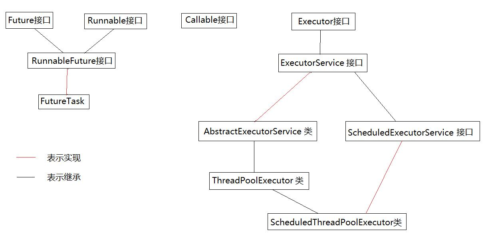
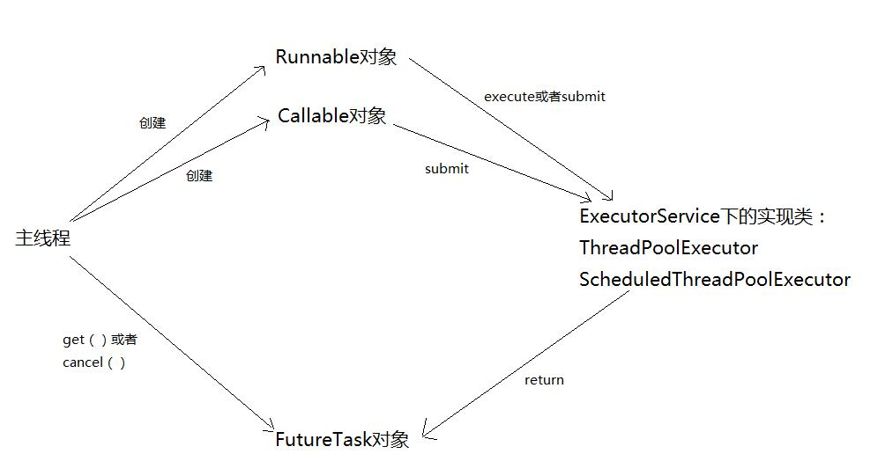
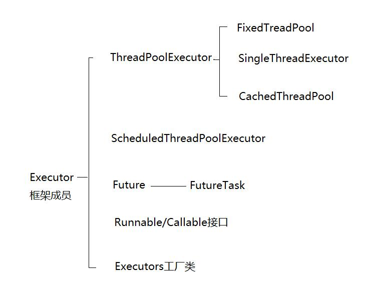

我们知道线程池就是线程的集合，线程池集中管理线程，以实现线程的重用，降低资源消耗，提高响应速度等。线程用于执行异步任务，单个的线程既是工作单元也是执行机制，从JDK1.5开始，为了把工作单元与执行机制分离开，Executor框架诞生了，他是一个用于统一创建与运行的接口。Executor框架实现的就是线程池的功能。
1、Executor框架包括3大部分：
（1）任务。也就是工作单元，包括被执行任务需要实现的接口：Runnable接口或者Callable接口；
（2）任务的执行。也就是把任务分派给多个线程的执行机制，包括Executor接口及继承自Executor接口的ExecutorService接口。
（3）异步计算的结果。包括Future接口及实现了Future接口的FutureTask类。
Executor框架的成员及其关系可以用一下的关系图表示：

2、Executor框架的使用示意图：

3、Executor框架成员：

1、FixedThreadPool
public static ExecutorService newFixedThreadPool(int nThreads) {
return new ThreadPoolExecutor(nThreads, nThreads,
0L, TimeUnit.MILLISECONDS,
new LinkedBlockingQueue<Runnable>());
}
public static ExecutorService newFixedThreadPool(int nThreads, ThreadFactory threadFactory) {
return new ThreadPoolExecutor(nThreads, nThreads,
0L, TimeUnit.MILLISECONDS,
new LinkedBlockingQueue<Runnable>(),
threadFactory);
}FixedThreadPool是线程数量固定的线程池，适用于为了满足资源管理的需求，而需要适当限制当前线程数量的情景，适用于负载比较重的服务器。
可以看出它的实现就是把线程池最大线程数量maxmumPoolSize和核心线程池的数量corePoolSize设置为相等，并且使用LinkedBlockingQueue作为阻塞队列，那么首先可以知道线程池的线程数量最多就是nThread，只会在核心线程池阶段创建，此外，因为LinkedBlockingQueue是无限的双向队列，因此当任务不能立刻执行时，都会添加到阻塞队列中
注意：因为阻塞队列是无限的双向队列，因此如果没有调用shutDownNow（）或者shutDown（）方法，线程池是不会拒绝任务的，如果线程池中的线程一直被占有，且不断有请求到来，会导致大量的请求堆积，进而造成内存溢出系统崩溃。
2、SingleThreadExecutor
public static ExecutorService newSingleThreadExecutor() {
return new FinalizableDelegatedExecutorService
(new ThreadPoolExecutor(1, 1,
0L, TimeUnit.MILLISECONDS,
new LinkedBlockingQueue<Runnable>()));
}
public static ExecutorService newSingleThreadExecutor(ThreadFactory threadFactory) {
return new FinalizableDelegatedExecutorService
(new ThreadPoolExecutor(1, 1,
0L, TimeUnit.MILLISECONDS,
new LinkedBlockingQueue<Runnable>(),
threadFactory));
}SingleThreadExecutor是只有一个线程的线程池，常用于需要让线程顺序执行，并且在任意时间，只能有一个任务被执行，而不能有多个线程同时执行的场景。
3、CachedThreadPool
public static ExecutorService newCachedThreadPool() {
return new ThreadPoolExecutor(0, Integer.MAX_VALUE,
60L, TimeUnit.SECONDS,
new SynchronousQueue<Runnable>());
}
public static ExecutorService newCachedThreadPool(ThreadFactory threadFactory) {
return new ThreadPoolExecutor(0, Integer.MAX_VALUE,
60L, TimeUnit.SECONDS,
new SynchronousQueue<Runnable>(),
threadFactory);
}CachedThreadPool适用于执行很多短期异步任务的小程序，或者是负载较轻的服务器。
CachedThreadPool使用SynchronizedQueue作为阻塞队列，SynchronizedQueue是不存储元素的阻塞队列，实现“一对一的交付”，也就是说，每次向队列中put一个任务必须等有线程来take这个任务，否则就会一直阻塞该任务，如果一个线程要take一个任务就要一直阻塞知道有任务被put进阻塞队列。
具体参见：点击打开连接
具体参见：点击打开连接